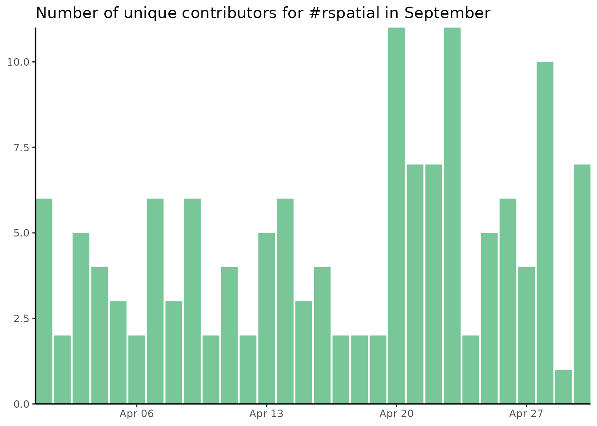

Example dataset
rds_file <- system.file("complete_tweets_rspatial.rds", package = "tweetrbot")
all_tweets <- read_rds(rds_file)Top retweets
In this vignette, I do not really post the tweet. I only retrieve its content.
- Update stored tweets information
# get last month data
# In this saved dataset, last month is April
last_month_tweets <- all_tweets %>% filter_month(the_month = 4, the_year = 2020)
# update rds data (not run in this example to not modify raw data)
# and return last_month updated
last_month_updated <- update_data(
path = rds_file,
statuses = last_month_tweets$status_id,
return_all = FALSE,
overwrite = TRUE)- Find top tweets
output <- top_tweets(all_tweets = last_month_updated, post_tweet = FALSE, top_number = 5)- Show stats
output$number_contributors
output$top_retweet
output$number_tweets
output$text_tweetSummary of September #rspatial: 195 tweets, 84 different contributors.
Most retweeted: https://twitter.com/jakub_nowosad/status/1251872204012302337 by @jakub_nowosad.